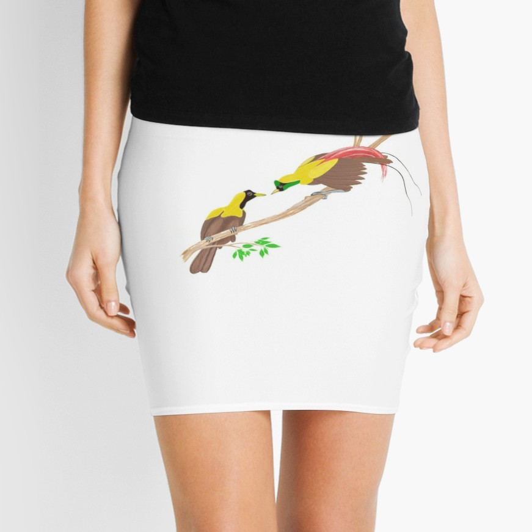
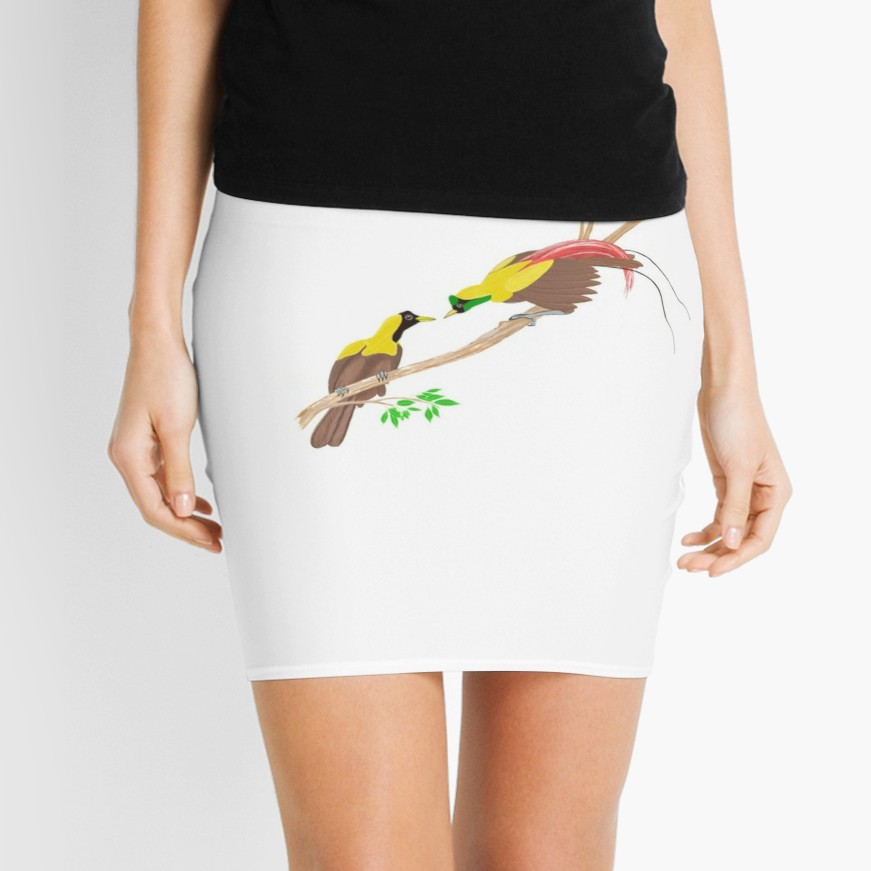
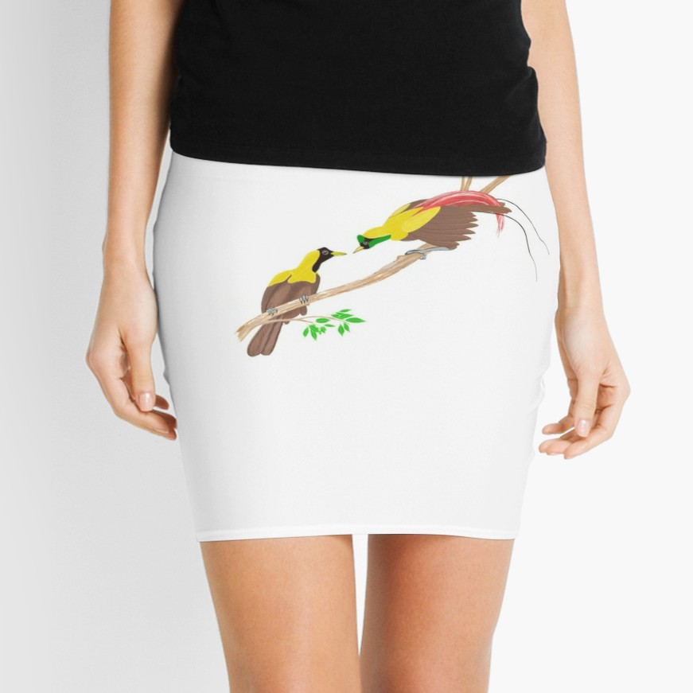
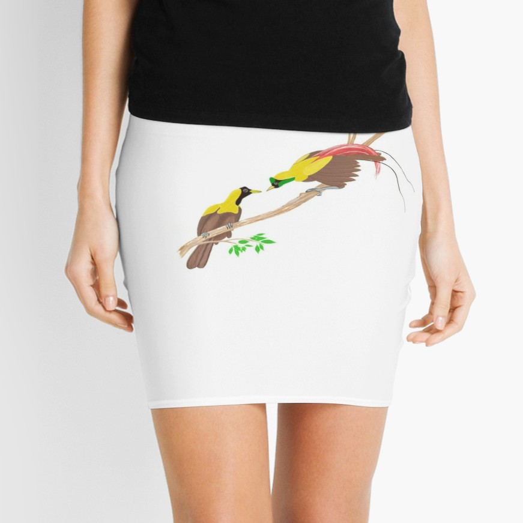

Female and Male Red Bird of Paradise
Mini skirt with illustration of Red Bird of ParadiseFemale and Male Red Bird of Paradise
Mini skirt with illustration of Red Bird of Paradise
Female and Male Red Bird of Paradise
Mini skirt with illustration of Red Bird of ParadiseFemale and Male Red Bird of Paradise
Mini skirt with illustration of Red Bird of ParadiseMale Red Birds of Paradise have got unique mating behaviour. They usually gather on top of a tree that stands on the edge of a hill or a cliff. Early in mornings and before sunset times, they compete against one to another by performing the best courtship dance. They do that to win the heart of their female counterparts which they want to mate with. The number of male birds can be as low as two to as high as five or six in one display tree. Vertical branches are the preferred choices for their dancing sites. We may associate this type of mating dance with the pole dance in human world. However, in the human world, the ones who dance are usually ladies. Their dance performance is considered as entertainment for their audiences. In paradise birds' world, the male birds are the ones that perform the dance which is an integral part of "mating ritual." The male birds of paradise do their courtship dance simultaneously. They are watched by female Red Bird(s) of Paradise.
Although Red Bird of Paradise are physically similar to Lesser and Greater Birds of Paradise, the way they dance are totally different. Red Birds of Paradise choose more inclined and even vertical branches as their dancing site. They often jumps up and down the poles and wags their bodies in zigzag pattern with their heads facing the forest floor and their tails facing the sky. As a matter of fact, this is a difficult "pole dance" performance. They flap their wings to lift them up to higher elevation of the branch and also to balance their body. Female Red Birds of Paradise jump to nearby branches at lower or higher ones.
As a tourist guide, I organize birdwatching, sightseeing, and snorkeling tour to Raja Ampat islands. A trip to the forest to watch the Red Bird of Paradise is included in the itinerary. I and the tour participants have to wake up early in the morning at 04.30 to make preparations such as wearing hiking shoes, t-shirt and jeans as well as making sure that all the birdwatching equipment such as camera and binoculars are already in our bag. Because it is still dark, a small flashlight/ torch will be needed for our earling morning walk in the forest. After having tea or coffee and some bread/ biscuits, we will leave our guesthouse at 05.00 for the lek of Red Bird of Paradise. We have to walk for 1 hour to reach it. When we arrive, the morning light begins to light up the forest canopy and the forest floor. It is the time when birds go out of their nests and resting places.
Male Red Birds Paradise fly to their meeting site which is top branches of a tree. They will call their female counterparts and then perform their courtship dances. If a female Red Bird of Paradise is impressed with the dance of a male Red Bird of Paradise, she will give green light for mating.We watch the paradise birds from 06.00 to 09.00. There are also other birds that we could see in the forest such as Claret-breasted Fruit Dove, Pink-spotted Fruit Dove, Moluccan King Parrot, Red-cheeked Parrot, Eclectus Parrot, Sulphur-crested Cockatoo, Frilled Monarch, Grey-headed Goshawk, Hooded Butcherbird, Blyth's Hornbill, Yellow-billed Kingfisher, Rufous-bellied Kookaburra, Common Paradise Kingfisher, and a lot more.
Because I like drawing and watercolor paintings, I have created artworks of these beautiful creatures. Two of them are attached in this article. They are now available in my Redbubble Artshop as prints on various products such as t-shirt, cell phone case, tote bag, clock, sticker, and a lot more. Please, have a look at these products at this link: Red Bird of Paradise Art.
I organize hiking, birdwatching, and sightseeing as well as snorkeling tour to Raja Ampat islands. The tour will start from Sorong city where I meet participants at the airport. It will last for at least 3 days to as long as 7 or even 10 days depending on how long tour participants want to spend their holiday time in Raja Ampat. Please, contact me (Charles Roring) by e-mail to peace4wp@gmail.com or by whatsapp to: +6281332245180.